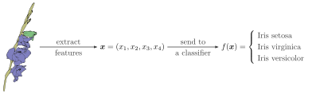

Mill.jl is a library built on top of Flux.jl aimed to flexibly prototype hierarchical multi-instance learning models as described in Tomáš Pevný , Petr Somol (2017) and Tomáš Pevný , Petr Somol (2016).
TODO table of contents
Motivation
In this section, we provide a short introduction into (Hierarchical) Multi instance learning. A much more detailed overview of this subject can be found in Šimon Mandlík (2020).
What is a Multiple instance learning problem?
In Multiple Instance Learning (MIL), also Multi-Instance Learning, the sample $\bm{x}$ is a set of vectors (or matrices) $\{x_1,\ldots,x_l\}$, where $x_i \in \mathbb{R}^d$. As a result, order does not matter, which makes MIL problems different from sequences. In MIL parlance, sample $\bm{x}$ is also called a bag and its elements $x_1, \ldots, x_2$instances. MIL problems have been introduced in Thomas G. Dietterich , Richard H. Lathrop , Tomás Lozano-Pérez (1997), and extended and generalized in a series of works Tomáš Pevný , Petr Somol (2017), Tomáš Pevný , Petr Somol (2016), Tomáš Pevný , Vojtěch Kovařík (2019). The most comprehensive introduction known to authors is Šimon Mandlík (2020).
Why are MIL problems relevant? Since the seminal paper from Ronald A Fisher (1936), the majority of machine learning problems deals with problems like the one shown below:[1]

where the input sample $\bm{x}$ is a vector (or generally speaking any tensor) of a fixed dimension containing various measurements of the specimen.
Most of the time, a skilled botanist is able to identify a specimen not by making use of any measuring device, but by visual or tactile inspection of its stem, leaves and blooms. For different species, different parts of the flower may need to be examined for indicators. At the same time, many species may have nearly identical-looking leaves or blooms, therefore, one needs to step back, consider the whole picture, and appropriately combine lower-level observations into high-level conclusions about the given specimen.
If we want to use such more elaborate description of the Iris flower using fixed size structures, we will have a hard time, because every specimen can have a different amounts of leaves or blooms (or they may be completely missing). This means that to use the usual fixed dimension paradigm, we have to either somehow select a single leaf (blossom) and extract features from them, or design procedures for aggregating such features over whole sets, so that the output has fixed dimension. This is clearly undesirable. Mill.jl a framework that seamlessly deals with these challenges in data representation.
Hierarchical Multiple Instance Learning
In Hierarchical Multiple Instance Learning (HMIL) the input may consists of not only sets, but also sets of sets and Cartesian Products of these structures. Returning to the previous Iris flower example, a specimen can be represented like this for HMIL:

The only stem is represented by vector $\bm{x}_s$ encoding its distinctive properties such as shape, color, structure or texture. Next, we inspect all blooms. Each of the blooms may have distinctive discriminative signs, therefore, we describe all three in vectors $\bm{x}_{b_1}, \bm{x}_{b_2}, \bm{x}_{b_3}$, one vector for each bloom, and group them to a set. Finally, $\bm{x}_u$ represents the only flower which has not blossomed. Likewise, we could describe all leaves of the specimen if any were present. Here we assume that each specimen of the considered species has only one stem, but may have multiple flowers or leaves. Hence, all blooms and buds are represented as unordered sets of vectors as opposed to stem representation, which consists of only one vector.
How does MIL models cope with variability in numbers of flowers and leaves? Each MIL model consists of two feed-forward neural networks with an element-wise aggregation operator like mean (or maximum) sandwiched between them. Denoting those feed-forward networks (FFNs) as $f_1$ and $f_2$, the output of the model applied to a bag is calculated for example as $f_2 \left\(\frac{1}{l}\sum_{i=1}^l f_1(x_i) \right\)$ if we use mean as an aggregation function.
The HMIL model corresponding to the Iris example above would comprise two FFNs and an aggregation to convert set of leafs to a single vector, and another two FFNs and an aggregation to convert set of blossoms to a single vector. These two outputs would be concatenated with a description of a stem, which would be fed to yet another FFN providing the final output. Since the whole scheme is differentiable, we can compute gradients and use any available gradient-based method to optimize the whole model at once using only labels on the level of output[2].
The Mill.jl library simplifies implementation of machine learning problems using (H)MIL representation. In theory, it can represent any problem that can be represented in JSONs. That is why we have created a separate tool, JsonGrinder.jl, which helps with processing JSON documents for learning.
In Tomáš Pevný , Vojtěch Kovařík (2019), authors have further extended the Universal approximation theorem to MIL problems, their Cartesian products, and nested MIL problems, i.e. a case where instances of one bag are in fact bags again.
Relation to Graph Neural Networks
HMIL problems can be seen as a special subset of general graphs. They differ in two important ways:
- In general graphs, vertices are of a small number of semantic type, whereas in HMIL problems, the number of semantic types of vertices is much higher (it is helpful to think about HMIL problems as about those for which JSON is a natural representation).
- The computational graph of HMIL is a tree, which introduces assumption that there exist an efficient inference. Contrary, in general graphs (with loops) there is no efficient inference and one has to resort to message passing (Loopy belief propagation).
- One update message in loopy belief propagation can be viewed as a MIL problem, as it has to produce a vector based on infomation inthe neighborhood, which can contain arbitrary number of vertices.
Difference to sequences
The major difference is that instances in bag are not ordered in any way. This means that if a sequence $(a,b,c)$ should be treated as a set, then the output of a function f should be the same for any permutation, i.e. $f(abc) = f(cba) = f(bac) = \ldots$. This property has a dramatic implication on the computational complexity. Sequences are typically modeled using Recurrent Neural Networks (RNNs), where the output is calculated as $f(abc) = g(a, g(b, g(c)))$ (slightly abusing the notation). During optimization, a gradient of $g$ needs to be calculated recursively, giving raise to infamous vanishing / exploding gradient problems. In constrast, (H)MIL models calculate the output as $f(\frac{1}{3}(g(a) + g(b) + g(c)))$ (slightly abusing notation again), which means that the gradient of $g$ can be calculated in parallel and not recurrently.
References
- Fisher1936
- Ronald A Fisher (1936), The use of multiple measurements in taxonomic problems, Annals of eugenics, 7(2), 179--188, 1936.
- Pevny2018a
- Tomáš Pevný , Petr Somol (2017), Discriminative models for multi-instance problems with tree-structure, arXiv:1703.02868 [].
- Pevny2018b
- Tomáš Pevný , Petr Somol (2016), Using Neural Network Formalism to Solve Multiple-Instance Problems, arXiv:1609.07257 [].
- Dietterich1997
- Thomas G. Dietterich , Richard H. Lathrop , Tomás Lozano-Pérez (1997), Solving the multiple instance problem with axis-parallel rectangles, Artificial Intelligence, 89(1), 31 - 71, 1997.
- Zaheer2018
- Manzil Zaheer , Satwik Kottur , Siamak Ravanbakhsh , Barnabás Póczos , Ruslan Salakhutdinov , Alexander J. Smola (2017), Deep Sets, arXiv:1703.06114 [].
- Mandlik2020
- Šimon Mandlík (2020), Mapping the Internet: Modelling Entity Interactions in Complex Heterogeneous Networks, Master's thesis, Czech Technical University, 2020.
- Pevny2019
- Tomáš Pevný , Vojtěch Kovařík (2019), Approximation capability of neural networks on spaces of probability measures and tree-structured domains, arXiv:1906.00764 [].
- 1Iris flower data set
- 2Some methods for MIL problems require instance-level labels as well, which are not always available.